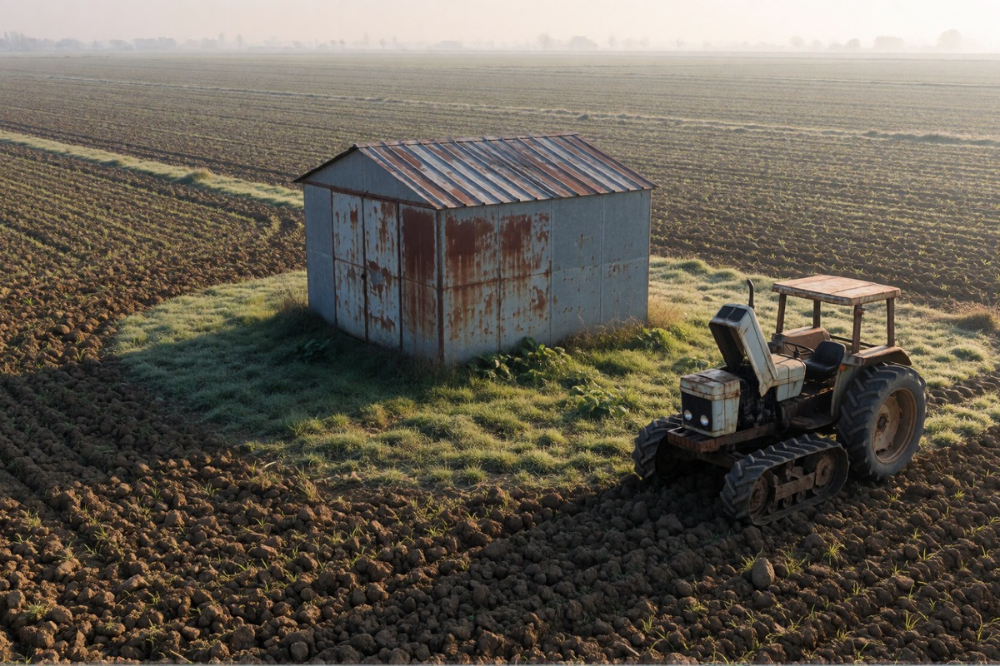

Mafia e antimafia · 23 novembre 2026
Foggia, ventidue misure per usura con il metodo mafioso

La Direzione investigativa antimafia ha eseguito quattordici arresti in carcere e otto ai domiciliari. Al centro un imprenditore agricolo: secondo gli investigatori gli interessi arrivavano oltre il duemila per cento, e oggi è testimone di giustizia.
di Franco Zanghì
Nelle campagne della provincia di Foggia, il Tavoliere, lunedì 23 novembre 2026 la Direzione investigativa antimafia ha eseguito un'ordinanza di custodia cautelare nei confronti di ventidue persone: quattordici in carcere, otto ai domiciliari. Le misure sono state disposte dal giudice per le indagini preliminari di Bari su richiesta della Direzione distrettuale antimafia.
Con gli oltre sessanta uomini della DIA hanno lavorato anche la Polizia di Stato, i Carabinieri e la Guardia di Finanza.
Le accuse
Le contestazioni sono usura ed estorsione continuata, aggravate dal metodo mafioso. Secondo la nota diffusa dagli investigatori gli indagati sarebbero appartenenti o vicini alla Società Foggiana, l'organizzazione di tipo mafioso radicata in città. È l'ipotesi dell'accusa, in una fase di indagini preliminari: per tutti vale la presunzione d'innocenza fino alla sentenza definitiva.
Al centro dell'inchiesta c'è un imprenditore agricolo della provincia di Foggia. Secondo gli investigatori gli interessi che gli venivano chiesti sui prestiti arrivavano, in alcuni casi, oltre il duemila per cento. È stato disposto anche il sequestro di beni per oltre tre milioni di euro: è il valore indicato da chi indaga.
Otto anni, e una denuncia
L'inchiesta è partita nel 2020. In conferenza stampa il procuratore aggiunto della Direzione distrettuale antimafia di Bari, Giuseppe Gatti, ha spiegato che la vittima è stata sotto pressione per otto anni e che è stata lei a rivolgersi alla DIA. Oggi quell'imprenditore è testimone di giustizia, è sotto un programma di protezione e continua la sua attività nel Foggiano.
Il sistema descritto dall'accusa non toglieva soltanto denaro. Secondo quanto ha riferito Gatti, agli usurai finivano automezzi e generi alimentari, venivano imposte assunzioni fittizie e, in un passaggio, la coltivazione di migliaia di piante di marijuana: una vicenda che il magistrato ha definito di agromafia. In un'occasione, sempre secondo il suo racconto, gli aggressori sono entrati in casa della vittima e della moglie durante il pranzo, li hanno fatti alzare da tavola e hanno finito loro il pasto.
Quello che non si dice
I nomi degli indagati non sono stati resi pubblici, e nemmeno quello dell'imprenditore e delle altre persone offese. Nelle fonti consultate non risultano dichiarazioni delle difese.
Quindi, per riassumere: ventidue misure cautelari della DIA, coordinate dalla Direzione distrettuale antimafia di Bari, per usura ed estorsione aggravate dal metodo mafioso; un imprenditore agricolo, interessi che secondo gli investigatori superavano il duemila per cento, oltre tre milioni di euro di beni sotto sequestro. E una domanda che resta: perché per chi finisce nelle mani degli usurai è così difficile chiedere aiuto?
Fonti
- Quotidiano del Sud, «Usura a Foggia, blitz Dia contro la “Società Foggiana”, 22 misure cautelari e sequestri per 3 milioni», 23 novembre 2026
- l'Immediato, «Usura e mafia foggiana, 22 arresti della DIA: prestiti con interessi oltre il 2.000% e sequestri per 3 milioni di euro», 23 novembre 2026
- Antimafia Duemila, «Usura ed estorsione col metodo mafioso, 22 arresti della Dia in provincia di Foggia», 23 novembre 2026
- l'Attacco, «Le armi, i prestiti e la pressione sull'azienda: otto anni vittima dell'usura, 22 arresti dopo la denuncia alla DIA», 24 novembre 2026
- Stato Quotidiano, «Usura ed estorsioni nel Foggiano, 22 arresti», 23 novembre 2026
Si tratta di misure cautelari disposte in una fase di indagini preliminari: per tutti gli indagati vale la presunzione d'innocenza fino alla sentenza definitiva. I nomi non sono stati resi noti dagli investigatori e non vengono cercati qui. L'anno in cui l'imprenditore si è rivolto alla DIA non è indicato in modo univoco dalle fonti: Antimafia Duemila riferisce le parole del procuratore aggiunto, che colloca la richiesta di aiuto poco dopo l'istituzione della sezione di Foggia, mentre l'Attacco indica il 2021. Sull'estensione del sequestro Antimafia Duemila scrive in un passaggio «alcuni» degli indagati e in un altro tutti: qui si riporta soltanto il valore complessivo indicato dagli investigatori.
Questo articolo nasce dalla pagina Gli Eroi dell'Abisso, dove la stessa storia è raccontata in video.